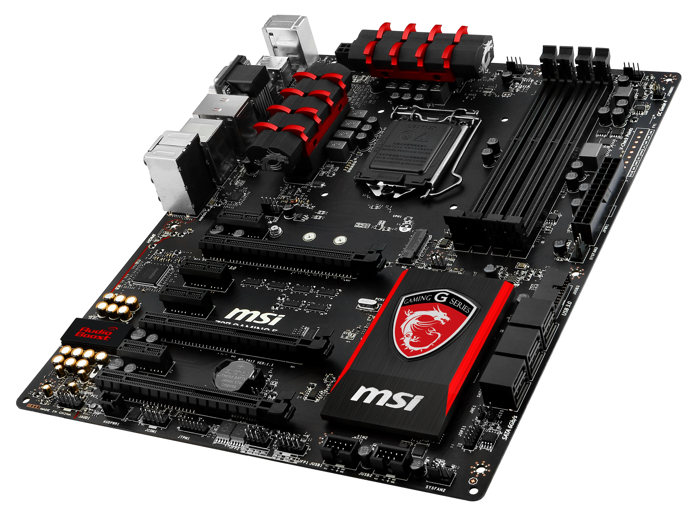
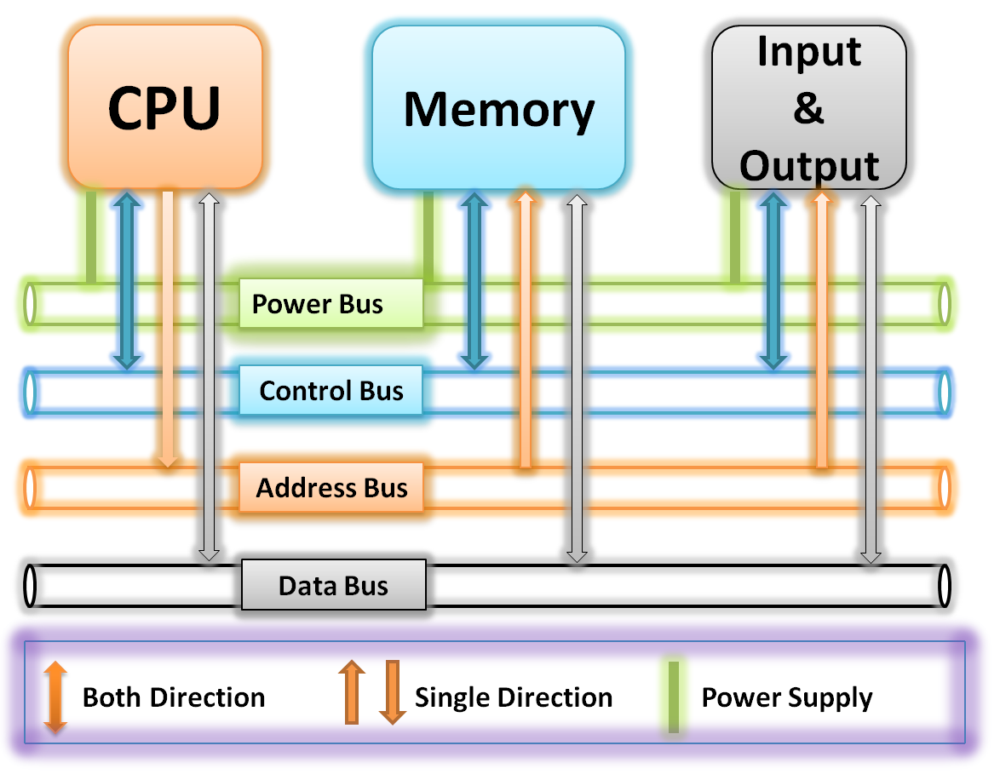

Het moederbord is een plaat in je pc waar allerlei andere onderdelen van de pc op aangesloten kunnen worden.
Zoals een ventilator, het geheugen, de processor, een microfoon, USB-poort en eventueel een videokaart.
Op de moederbord zitten ook lijnen die de verschillende onderdelen door stroom kunnen laten samenwerken. Deze lijnen heten circuits.
Het moederbord wordt ook wel het hart van de computer genoemd.
Bus

De bus is een transportmedium dat door elektronische signalen het aantal verbindingen tussen diverse schakelingen verminderd.
Er zijn 3 verschillende lijnen in een bus: de adresbus, de data bus en de besturingsbus. Deze lijnen verbinden de CPU, RAM, ROM, In~ and Output en andere onderdelen.
De adresbus is een bus die aangeeft op welke locatie data zich bevindt door de processor van de computer.
De databus zorgt voor de transport van de digitale data. Je kan de databus in twee andere soorten indelen: de parallelle bus en de seriële bus.
De parallelle bus kan meerdere bits tegelijkertijd sturen (meestal in 8,16,32,64 …) en is sneller maar de afstand tussen de componenten moet niet te groot zijn.
De seriële is goedkoper en stuurt bits 1 voor 1, maar de afstand tussen componenten is niet een probleem.